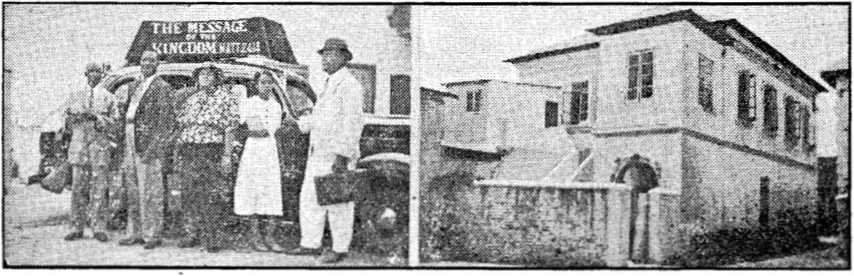

Will Madame have a facial to match her fancy bracelets T

Contents
Death of the Spanish Republic.
Double-crossing America and Spain
United States Air Pilot Requirements
“Most Reverend” Simonds Fibbed
Mexico, Britain, Ethiopia and Japan
Published every other Wednesday by
THE GOLDEN AGE PUBLISHING COMPANY, INC.
117 Adams St., Brooklyn, N. Y., U. S. A.
President Clayton J. Woodworth
Vice-President Nathan II. Knorr
Secretary and Treasurer Charles E. Wagner
Five Cents a Copy
$1 a year in the United States
$1.25 to Canada and all other countries
NOTICE TO SUBSCRIBERS
Remittances: For your own safety, remit by postal or express money order. When coin or currency is lost in the ordinary mails, there is no redress. Remittances from countries other than those named below may be made to the Brooklyn office, but only by International postal money order.
Receipt of a new or renewal subscription will be acknowledged only when requested. Notice of Expiration is sent with the journal one month before subscription expires. Please renew promptly to avoid loss of copies. Send change of address direct to us rather than to the post office. Your request should reach us at least two weeks before the date of issue with which it is to take effect. Send your old as well as the new address. Copies will not be forwarded by the post office to your new address unless extra postage is provided by you.
Published also in Afrikaans, Bohemian, Danish, Dutch, Finnish, French, German. Greek, Hungarian. Japanese, Norwegian, Polish, Portuguese, Spanish, Swedish, Ukrainian; also special Australian edition in English.
OFFICES FOR OTHER COUNTRIES
England 34 Craven Terrace, London. W. 2
Canada 40 Irwin Avenue, Toronto 5. Ontario
Australia 7 Beresford Road, Strathfleld*. N.S.W. South Africa 623 Boston House, Cape Town
Entered as second-class matter at Brooklyn, N. Y., under the Act of March 3, 1879.
Did Not Get Away with It
B “Hawkins, the cook advises me that you were badly intoxicated last night and that you were trying to roll a barrel out of the basement. Can this be true?”
“Yes, my lord.”
“And where was I during all that time?” “In the barrel, my lord.”
The Next Back Call
Collector—Hello there, young man. Is your mother or father home?
Little Jackie—They are both out and said for you to call again Friday.
Collector—Il’m! And why on Friday, my little man?
Little Jackie—That’s what I don’t know, sir. We’re moving Thursday.
Aviation Problems ,
It was in the spring. Their hearts beat as j one. He took down the stove pipe and, behold, j the chimney flue. Hardly had this happened ■ before his wife .saw the house fly. After that, J the house was in an uproar for days at a time, | until things settled down and the clothes were back on their hangars.
■
Hall but Halice
“What a big family you have, Mrs. Jones!” ■ said the visitor in an English home.
“Yes’m. And the funny thing is that all the names begin with a haitch. There’s ’Grace, ’Erbert, ’Enry, ’Ugh, ’Ubert, ’Arold, ’Arriet, and ’Etty—hall except the last one, and we ’ad ’er named Halice.”
Keeps One Busy
“A fellow has to be a contortionist to get on these days,” says a philosopher. “First he has to keep his back to the wall and his ear to the ground. Then he must put his shoulder to the wheel, his nose to the grindstone, keep a level head, and have both feet on the ground.”
Same as in America
Answering a question put by liis teauher, a British urchin replied, “The prevailing religion in England is hypocrisy.”
“And in His name shall the nations hope.”—Matthew 12:21, A.R.V.
Volume XX Brooklyn, N. Y., Wednesday, March 8, 1939 Number 508
Ambrose Ratti, generally known as IfeA M; Pope Pius XI,* head of the Italian
Camorra operating out of Vatican City, succeeded before his death in
*“ destroying the Spanish Republic, after accomplishing similar work as respects the republics of Germany, Austria, Czechoslovakia, and Danzig. To his achievements may also be added the destruction of Ethiopia and the imminent destruction of China.
Make no mistake, the war in Spain originated with the pope. It was his war. The men he used to accomplish the ruin of Spain were all professed Catholics, as Juan March, Hitler, Mussolini, Daladier, and Franco, or were sympathetic with (jnd in subservience to the Hierarchy, as is the case with Chamberlain and Roosevelt.
Franco used the Moors, traditional enemies of Spain, in accomplishing the ruin of the republic, and Franco had the pope’s “blessing”.
The pope made it plain on July 29, 1938, that there arc no serious differences between himself and the Fascist dictators when he said:
Now there is someone who has affirmed that between Catholic Action and the Fascist party there is an unbridgeable doctrinal divergence. Big words are these, but crazy words.
A dispatch from Rome, published in the London Catholic Herald of July 22, 1938, stated:
The Press in the democratic countries is inclined to jump to somewhat exaggerated conclusions when the pope speaks out with force against certain ’Judge Rutherford did not name Pope Pius XI personally in his address at London, September 11, 1938, and hence to his successor now applies the warning then given:
Today you stand before the judgment scat of Christ, the great Judge of the world. According to the undisputed facts you arc convicted out of your own mouth, and the Lord’s final judgment hns been entered against you and you are going to die. (See the booklet Face the Facts, page 23.)
MARCH 8, 1939
tendencies in Italian Fascism. “The pope condemns Fascism” headline of many English newspapers this week has caused much annoyance here [in Rome]. It is an entirely misleading interpretation of the Holy Father’s words on “the curse of extreme nationalism”.
According to Sir Peter Chalmers Mitchell, of Malaga, Spain:
The war in Spain is an attempt on the part of the people of Spain to defend the decencies of life, the possibilities of education and their hope for the future, which they have won at an election, from a violent and greedy set of Spanish oppressors who want to get all their old privileges back again. And these oppressors are backed by the might of German and Italian armies. To my mind, the Spanish people are fighting your battle and my battle for the freedom of humanity, and in their fight their greatest enemy has been the policy of Great Britain.
Testimony of Catholic Priests
Hggrr Ramon Ugarte, Catholic priest,
pastor of the parochial church of
■C Santa Maria de San Sebastian,
A Spain, stated:
"’’■* Our war [of the Spanish Republic to put down the Franco rebellion J is not a religious war nor an ideological war; it is a monstrous war imposed upon the Spanish worker by a bunch of traitors to their country, which they have sold shamefully to preserve their iniquitous privileges to exploit the people. Traitors and perjurers, vile assassins, Pharisees whom, if Jesus were to come again to the world, He would drive away from the Temple, not at the crack of the whip, but kicking them out!
“The Pope of Peace” was without compassion for Basques, Catalonians, Ethiopians, Chinese or the common people of any land, but was interested only in the maintenance of the most ungodly racket beneath the sun. There has been much palaver about his “saintliness”, and his prospects of a place in heaven or “purgatory”. He lias none, and the world, though well rid of him, is no better off with bis successor in office.
3
Another priest, Michael O’Flanagan, of Dublin, Ireland, upon his return from that war-racked land, said:
If a totalitarian state is one of the most hateful things in the world, a totalitarian church is more hateful still. The Church has often proved itself to be a very unreliable leader in political affaire.
Don Jose Bcrgamin, director of the Catholic review Cruz y Raya, summed up the Spanish situation as follows:
Cast yoar eyes for one moment on that tragic pyramid of grotesques: generals, bishops, Moors, Carlists in red berets—they are like some fantastic mumming-show of Death. They entrust the defense of their Spain to Moors and soldiers of the Foreign Ix?gion, for they have no Spanish hands and bodies to defend themselves. This is the truth of Spain in these bloody hours. We are the Spaniards: they arc a handful of traitors with some thousands of barbarian mercenaries at their command, with some weapons of war bought on credit out of the spoils to which they would reduce our land. And in these they put their trust, or rather their desperation. By such barbarians some of the dignitaries of our church seek to defend their impostures—dignitaries of the Church which they have taken from the people, which they have corrupted, prostituted, shamed with avarice and spotted with our blood, the blood of the Spanish people. Listen to this, if you are listening to me, unfaithful shepherds, traitors to Christ! Yon have placed in the barbarous hands of Legionaries and Moors the sacred vessels, the riches and treasure which you never offered to your people, the poor, the disinherited, the hungry. And you either give these things as sacrilegious booty, or to convert them into weapons dealing death to your people and your flock. I know you well, bishops who dabble in politics, who chatter of politics. Listen well; for this is an accusation which I make. You, the dignitaries of the Spanish church, have betrayed that church, and have robbed the people I
In the year 1928 there were 32,001 priests in Spain. In 1936 the “Rebels” asserted that 17,500 of them had been slain. Later Cardinal Goma said the number slain was more than 10,000. In the last pastoral letter of the Spanish bishops they stated that the number slain was 6,000, and the facts show that most of these (possibly an actual 3,000) were slain while fighting as common soldiers against the government, the object of their conspiracy.
Earth's Most Gifted Liars
« The Osservatore Romano, organ of the Vatican, cheerfully said.
In Teruel, twenty-seven of the sixty-five priests on January sixth [1938] were murdered by Communists.
And then the Spanish Republic supplied the information that four of the number Mere being held in officers’ quarters in Barcelona, twenty-two were held in the military barracks in Valencia, and the twenty-seventh had died in a military’ hospital. The only reason that any' of the priests were confined was their illegal activities against the state.
(Jiving the lie to the oft-repeated stories of persecutions of priests in the Spanish Republic, the New York Gerald Tribune carried a dispatch from Barcelona, the then capital, that on October 17 priests walked the streets in robes and the other funny-looking things they like to wear, while the people in general tipped their hats and soldiers gave the military salute. But so long as there was any chance of a victory for Franco, the Hierarchy continued to send out stories of persecution, so as to get the public sympathy necessary to the continuation of their racket.
.On July 22, 1938, 28 Spanish nuns landed in England after being in Madrid and Barcelona for over two years of the civil war. They denieel that they had suffered any’ special hardships or ill treatment ou account of being nuns.
It was the intention of the Spanish Republic that, in the event of final success for the Loyalists, Spain should become a refuge for the oppressed of German lands, whether Catholic, Protestant or Jewish, and a proclamation to that effect was issued. What a rebuke this was to the murderers, liars and traitors that brought about the defeat and destruction of the republic and dashed the hopes of the Spanish people for better conditions to the ground!
The Loyalist government of Spain carefully protected Spanish art treasures, many of them of ecclesiastical significance. Arrangements were made with the League to hold these in safekeeping until the conclusion of the war.
Lawrence Fernsworth, American newspaper correspondent in Spain, showed further the good intentions of the government:
-phis brings ns to the religious phase of the situation here. A great deal of poison has been spread abroad in an effort to make people believe that this is an anti-God government having as one of its main purposes the crushing of religion. Sectarian periodicals have published and repeated that “the government has liquidated the priests”. I have gone deeply into the facts—they would affect me profoundly if they were true. But I find no evidence to support the charges.
In Barcelona today there are living some 2,000 priests, in Madrid some 900, in other cities and towns others in proportion. I know of anarchists who saved the lives of priests, and I know of atheists who sheltered priests in their homes to guard them from harm. All this contrasts oddly with the statements that “not one priest remains in Madrid”, or in Barcelona or some other city, as the case may be.
I am told by an investigator, himself a Catholic priest, that not more than 80 priests were killed in Madrid. That is bad enough, but they are only a fraction of many others who suffered in those days of turbulence and chaos. Those sworn to uphold the government and law and order abandoned it, turned traitors, and for some months anarchic disorder reigned until the government, fighting for its life at Madrid, could establish law and order again, as now it has done. That is the long and short of it.
The government has offered every facility for the re-establishment of religious worship. Protestant churches have been open for months; Catholic churches have not opened except for some chapels, particularly one in Barcelona, which is freely open to the public.
The government has gone strictly upon the theory that since there exists a constitutional separation of Church and State, it is not for the government to open churches. Catholics, if they wish their services, must open their own churches and the government will protect them. But the sad fact must be recorded that Catholics have not yet opened churches because of systematic obstruction on the part of the clergy.
Few, if any, are sympathetic to the government even though receiving its protection. Most of them are waiting for the arrival of Franco. “They are more interested in having a pretext for murmuring against the government than in accepting its protection and good will,” one of the priests loyal to the government told me.
These priests still take the view, as manifested by the bishop of Terue) at the time of his capture, that this is a “holy war”, in which the main issue is the church. It has been one of the great misfortunes of Spain that the church has insisted upon making itself the main issue.
And Pedro Lecuona. minister counselor, Spanish embassy, Washington, D. C., stated:
It would be interesting to know whether Mgr. Antoniutti knows that Franco has shot 13 priests, imprisoned 117, and exiled 135 in the Basque country; that the bishops in the Rebel zone do not raise their arms to bestow benedictions but to make the Fascist salute; that they celebrate mass on altars in which instead of having a holy image, they have the arrows of the Spanish Fascist emblem (the veracity of this can be proved with photographs); that on the altars of certain churches of San Sebastian and Bilbao there are to be found large portraits of Franco; that the parish priests MARCH 8, 1939 of the Basque country have informed the Vatican that the people remain absent from church as a protest against the attitude adopted by the greater part of the Hierarchy toward the Spanish civil war; that there are many, many Mohammedans who Franco claims are fighting for the Catholic religion.
The New Orleans Tribune of January 21, 1939, carried an article by Roy Mouton, who served in Spain as a volunteer, in which he says:
. The most lying kind of propaganda has been launched against the Spanish people. I am a Catholic; I went to mass over and over again. There is no interference with the church. And all of that cry about “Communism” is a smoke-screen.
No attempt will be made here to review all the events of the Spanish Civil War. Mention is made only of some of the more recent engagements.
During the siege of Madrid not only were the 1,300,000 inhabitants supplied with sufficient food, but 3,000 babies were bom. The road to Valencia was kept open and supplies continued to arrive.
Many wonder how the Spanish Republic, cut in half by Franco’s army, eould have continued to function as long as it did. Mails were carried between the two parts by submarine. Steamship and air-mail service were also maintained. Only the railway and highway communications were cut.
In the assault on Teruel, 400 Fascist airplanes staged the world’s greatest air battle. The German and Italian planes used were described as new ones, spreading death and destruction for all the daylight hours, and dumping 1,500-pound aerial torpedoes on their objectives below. The destruction spread to villages fifteen miles behind the battle front.
A British commission which examined the city of Alicante after a scries of air raids by the rebel forces found that eighty bombs had been dropped within a certain time, but not one of these fell within a quarter of a mile of any military objective and that the only conclusion possible is that the raids were deliberate attacks upon civilians or else were conducted by persons unskilled in air raids, which is doubtful.
Spanish Rebel General Yague made an address at Lerida, Spain, in which he complimented the courage of the Spanish Loyalist soldiers and said that the German and Italian soldiers in the Rebel ranks conducted themselves like birds of prey. He thought that per-
haps some day a reunited Spanish people would fight both the Germans and Italians.
Protestants pressed the pope to say something to Franco deploring the bombing of civilians in Spain, but it must have been understood between them that what he then said was to go in one ear and out of the other; for it had not the least effect
The Massacres of Majorca
In a new book by Georges Ber-nanos, a French Catholic writer, he tells of his experiences on the island of Majorca: how he greeted the arrival of the first Italian airplane without displeasure, but how, finally, his eyes were opened to the horrors of Fascism as he saw the mass executions, 3,000 in a few months, in a small island, with a peaceful agricultural population who had never had much to do with politics. He declares that all suspects were dragged out of their houses at night and massacred; not a sick or wounded person was spared; sometimes the massacres took place in the presence of a priest; appearances were carefully preserved; no one was allowed to wear mourning; no shops were closed.
The New York Tinies, in its issue of January 19, carried a dispatch in which it is stated that refugees, gathered in the main square of Santa Coloma de Queralt, were machine-gunned by Franco’s men. The town was subsequently recaptured by the Loyalists and so the trut h got out.
October 7, 1938, to get a good name for himself. Franco caused 345.000 packets of cigarettes and 250 tons of bread to be dropped on Barcelona and Madrid. He hoped thereby to weaken the resistance of those two important centers of Loyalist Spain. The day previous he had dropped 2,500 pounds of high-explosive bombs on Pnlamos and four incendiary bombs. The Loyalist government reciprocated the bread and cigarette maneuver by dropping tons of stockings, shirts and other wearing apparel in Burgos.
The Dipeche de Toulouse, one of the most influential newspapers in France, reported that Franco sent enormous quantities of American wheat to Germany in exchange for munitions. The wheat had been contributed by charitable societies.
In fourteen months Valencia was bombed with something more substantial than bread 460 times, during which bombings 3,000 per-6
sons were killed and more than twice that many wounded.
2,000 Air Raids on Barcelona
V ffl During the course of the war
X Kj Barcelona was subjected to some
- jH 2,000 air raids, in which tens of thousands of bombs were dropped
• - on the city. Hundreds of men, women and children were killed, and thousands seriously injured. Over a thousand buildings were destroyed.
After the capture of Barcelona the rebel conquerors celebrated an outdoor victory mass in the city.
There was great rejoicing at Rome over the Barcelona victory of the “Spanish rebels”. The former king and queen of Spain, whose marriage, after many years of married life, was declared void by the pope, wore there at a “solemn mass”, and so was Vladimir Lcdoehowsky, superior general of the Jesuits. Just a “coincidence”, of course.
Jerry J. O’Connell, liberty-loving representative from Montana, wanted justice done for Spain. Although O'Connell is a Roman Catholic, and even though his meeting was picketed by Catholics hostile to his stand, he boldly addressed 6,500 people at Pittsburgh, protesting against the Spanish embargo.
The embargo against the Spanish Republic would have been lifted early in May, and the agreement to do so bail already been formed by Secretary Hull and his advisers, when word came from Roosevelt, then fishing in the Caribliean, to wait until he got back. It seems that the Roman Hierarchy turned the heat on him and, as usual, he went along with the great enemy of democracy.
Bringing Hypocrisy into the Open
j&Sy Bringing the hypocrisy of the so-called “Non-Intervention” pow-L'‘ ers into the open, the prime min-_’stcr Spain, Dr. Negrin, announced at the League of Nations that the Spanish Republican Government had ordered the immediate withdrawal of all non
Spanish combatants fighting on the Government side, and asked for the immediate appointment of an international commission by the League of Nations to sec that this was done. The very same paper that announced this courageous stand also announced that Italy was sending fresh troops to Franco. Negrin claims that if the Moors. Italians and
Germans had been withdrawn from Spain the Republicans could have re-established order in three weeks.
The United States may send munitions to any country that needs them, except Spain. The reason it could not send them to Spain was that it would offend the Roman Catholic Hierarchy, which is the power behind the Franco-Moorish-German-Italian attack. Mexico has no such scruples and recently filled a ship full of munitions for the Spanish Republic, and followed that with a large order of munitions for Mexico, placed with makers in the United States. Miss Dorothy Thompson, noted columnist, said:
A legitimate, friendly government has the right to buy from us in the markets of the world whatever she needs for her defense against rebellion. That is a principle of international practice which the American government has stood for from the beginning of her history. Our historic tradition has been on the side of not only selling arms to friendly governments, but of preventing arms’ going to rebels against which such friendly governments were struggling.
Italian Non( ? ^Intervention
ST General Ambroglio Barlatti, in
It Mediterraneo, explained Italy’s interest in the Spanish Civil War, when he said:
It is time that the Spanish war be recognized as a continuation of the Abyssinian campaign. We must impose our influence on the Spaniards so that the Mediterranean may become the Italian Jake of which Mussolini has spoken. In view of the fact that Italy was officially at peace with Spain, it was rather interesting that the Italian government published the information that since the war began in Spain Italian fliers shot down 580 airplanes. In April, 1938, the Italian fliers dropped 291 tons of explosives on their Spanish neighbors; in May, 431 tons; and in June, 719 tons. The Italian government was -one of the governments on the Non-Intervention Committee, supposed to be struggling to bring about peace in Spain.
When the Spanish Government reported the return to Italy of 10.000 Italian soldiers and the immediate replacement of 4,549 sent to Spain in 16 ships, details of the names of the ships and the number of men on each ship were given. The Republic estimated that after this exchange the Italians still had in Spain 900 pilots, 2,000 aviation mechanics, 10,000 chauffeurs, 5,000 engineers, 10,000 la-MARCH 8, 1939 borers, 2,000 secret police, 1,000 army service men, and 60,000 soldiers, making in all about 91,000 men. [Condensed from a Barcelona dispatch by Herbert L. Matthews in the New York rimes.]
Up to the fall of Barcelona 2,928 out of some 50,000 Italian soldiers in Spain had been killed. Undoubtedly Mussolini expects that his investment of men and money in Spain is going to yield returns to Italy that will justify the lavish expenditures. The rebel victory undoubtedly increases Italian prestige and power considerably. British statesmen, however, continue to hope that they will be able to offset Mussolini's influence in Spain by means of loans to Franco, who will not be in position to ignore Britain.
Pope Rejoiced to See Ruin
—"j Pius XI, foreseeing the ruin of
the Spanish Republic when the Anglo-Italian deal was made, said, “God be praised,” when Pacclli told ■iSa. ■ him about it.
The Manchester Guardian, seeing that there had been no square deal intended for Spain, said:
It is two years since the foreign invasion of Spain began. It has taken that time for the Powers to produce even a pajier scheme that might give the Spanish Government not a square deal, for nothing so absurd is contemplated, but a deal less crooked than that which has brought it within sight of defeat.
Franco the Butcher discloses the heart of Fascism (Catholic Action) in his rulings regarding education. Uis so-called “minister of education” closed fifty high schools in the territory under his control, giving as a reason the following strictly Papal principle:
The people arc better off without education. It unfits them for their destiny as peasants and workers.
That is rich, for a “minister of education”. And it shows what must inevitably happen in any land that comes under Fascist control. There will be a drying-up of all sources of information for the common people. This drying-up is actually under way in the United States today, when children arc driven away from the public school because they refuse to worship the flag, and when the Roman Catholic Hierarchy conspires to keep Judge Rutherford off the air, and when the newspapers and the movies are so polluted with superstitious Roman Catholic rot that they can hardly’ be seen without nausea. The
prophet saw this day coming when he said, “My people arc destroyed for lack of knowledge.”—Hosea 4: 6.
With respect to Franco’s tentative government setup John V. Hinkel, in the New York Times of September 5, 1938, says:
In its setup the government appears to be totalitarian. Freedom of speech nnd of the press is curtailed under it; commerce and industry are strictly supervised; no political opposition—particularly from the lx>ft—is countenanced; the people are mildly regimented, and there are other earmarks. As perhaps the most influential non-government personage in Nationalist Spain, Cardinal Goma y Tomas, head of the Spanish hierarchy, commands a great deal of res|>ect and attention. The cardinal told the writer that “the spirit of the laws promulgated thus far by the Nationalist government is in complete harmony with the teachings of the church”.
That the traitorous Spanish rebel setup is backed by the Hierarchy to the limit is indicated in The Register, Catholic paper of central California, of August 21, 1938:
Nearly 900 cardinals, archbishops and bishops throughout the world have written letters to Cardinal Goma, primate of Spain, which appear in the book being issued at Burgos, showing the sympathy of world Catholics with the Nationalist cause. Included are collective letters of sympathy from the Hierarchies of the United States, Canada, Britain. Mexico, and other countries. With Vatican approval, the book is being published as a sequel to the 1937 Pastoral Letter of the Spanish Hierarchy.
How things will go is shown by the fact that Franco had a formal inauguration of his regime at Burgos, Spain, December 2, 1937, in which he was enthroned beneath the oldtime arms of King Alphonso’s Spain. He was sworn in with religious rites. The exercises took place in the Roman Catholic church of Huelgas.
The Franco tribunal at Bilbao sentenced Dr. Pedro Lozano, director of the hospital of Durango, to eleven years’ penal servitude because he continued to look after the patients when the Loyalist forces were in Durango.
“The liutcher”
H Franco admits he has a card file of some 2.000,000 persons many of whom will be put to death and the others sentenced to penal servitude. He announced that he will not tolerate any other “Christian religion” in Spain than the Catholic religion, lie concluded a treaty with Hitler.
Franco will absolutely control the press in Fascist Spain. Orders issued by him regulate the number of papers and reporters and make the newspaper a department of the government, subject to it in every detail.
Cardinal Goma, chief representative of the Roman Catholic Hierarchy in Spain, fully approves Franco’s course of action. He said: A regime of i>crfcct accord between the Church and the State must be established, since the former must intervene on many issues. 1 am happy to be able to tell you that up to now we are in complete agreement with the Nationalist government, which, on the other hand, never takes a step without consulting inc and obeying me. The representative of the minister of justice will bear me out in that.
Jacinto Benaventc, Spain’s greatest living writer and Nobel prize winner, points out the connection between Fascism and the Inquisition, and shows that no good may be hoped for with the Hierarchy in control.
I have never hesitated. From the very first moment I put myself on the side of the victim against the hangman, and 1 will continue fighting on the side of the people until the end. Fascism, I am sure, is the bloody child of the Inquisition. It takes possession of labor to exploit it; of heroism to debase it; of glory to soil it; of thought to prostitute it
Double-crossing America and Spain
IN READING your magazine I have come to the conclusion that it represents one of the greatest weapons against Fascism in this nation. Such a weapon is badly needed, and should be made as far as possible the medium of the freedom-loving Americans for the expression of their opinions.
The majority of the nation’s press have steadily veered toward the pro-Faseist elements. But this is not always because of any desire or ulterior motive. We must realize that a publisher is in business for profit. Suppose for a moment that you are such a publisher. You receive, in one week, ten letters upholding democracy and two hundred claiming to, but really upholding Fascism. You know these are pro-Faseist letters, and you refuse to let
a campaign of this kind bother you. But week after week the stream continues, heaping abuse upon you for not reflecting the true sentiments of the reading public. You begin to veer. The apologists for Fascism take heart and redouble their efforts. You keep on veering, until you reach the stage where you are afraid to let anyone speak to the contrary, no matter how reasonable the arguments.
That, my friend, is the application of an old principle; it was popularized and made easy by Hitler. I let Herr Hitler speak for himself (quoted from Mein Knmpf): ‘‘Any statement, carefully and patiently repeated, becomes a truth. Any people, if subjected to a clever and persistent course of propaganda, can be made to think that heaven is hell, and that a life of misery is heaven on earth.” Such a campaign is now being launched, has in fact been launched for some time, in the United States. Editors are being subjected to propaganda, largely unseen by the public. Most of the names behind this propaganda have a strangely similar ring: Conway, Halloran, Murphy, O’Brien, O’Reilly, O’Conncl — O’-WhoNot ?
The similarity in names is in itself an evidence of collusion. But this collusion is further testified by the fact that from week to week the arguments are altered, and all of them in precisely the same manner. The arguments, accusations and charges are varied precisely as the official publications of the proFascist groups arc varied. This week you will see that the Spanish elections of 1936 were falsified. Next week you will see a special feature of the villainous ‘‘Reds'’ infiltrating into the now legal government and Paul Revere Franco riding to save the honor of 133,000 officers and 25.000 men, not to mention the royal family. Next you sec Franco in a thrilling serial: in the first part he is a retiring family man with great responsibility thrust upon him ; in the second he is suddenly a great leader ruthlessly facing the necessity of killing (there seems to be part of a reel missing right there) and rallying all the forces of good to save Spain; the third part shows him stemming the tide of “Red” legions, killing 285,000 out of an original 30.000 (how the rabble docs multiply!); the fourth part reveals that he planned it all the time, not against the government, but against those who sought to undermine the government, and that he really would not have stemmed the tide if it x had not been for the kindly efforts of loyal
MARCH 8, 1939 men of the faith throughout the world, whose great work has changed a hostile press to a sympathetic one (yes, they admit it).
When this campaign touches on the wounded men returning from Spain it reaches the depths of hatred. We were told of this hatred when we left Spain, warned that our every word would be misquoted and that we would not be allowed to find here a haven of peace. We knew that we would have to continue living that war, because we know what Fascism is. The veterans are ridiculed, prevented from speaking at public meetings, charged with being Communists in order to discredit their testimony. They are the objects of hatred, prejudice, conniving, conspiracy, slander and libel.
What the friends of Fascism do not realize is this: The men who fought for the liberty of the Spanish people have learned courage and iron discipline. At Jarama they fell in windrows before the attack of tanks and planes, but those who lived gave Franco his first great defeat. From Brihuega they retreated all the way to Guadalajara, then turned to drive the Italian blackshirts thirty kilometers and capture an entire brigade of men. At Caspe they counterattacked without artillery and with their own troops retreating on all sides; they were cited as having, in that action, saved the life of the Catalonian Republic. Those who live are welded into an everlasting brotherhood, a brotherhood tried in fire and pledged to die if necessarv in defense of democracy. They are a powerful force for good, because they have learned the essential qualities of leadership and intelligent thinking. They will fight in good faith with anyone for the preservation of human rights and principles.
If the readers of your magazine want to protect their own rights and guarantee free speech to others who want freedom, they can do nothing better than to write to their local newspapers and the national magazines. They must meet the threat of the pro-Faseist forces by using the weapon used by those forces. If those who love democracy and tolerance v ill only make their presence felt, if they will broach the subject freely to the editors and demand a hearing, some of the press will eventually be open to their point of view. They must exercise unceasing vigilance against the usurping of the freedom of the press through clever conspiracy.—Norman Hawkins, South Dakota.
9
United States Air Pilot Requirements
U7 FLYING in the United States is * X/ji1! regulated by the new Civil Aero-nautics Authority, and flyers are examined by inspectors of the Bu-roan. The flyers’ law is the “Civil Air Regulations”, referred to as CAR, and issued by the secretary. These regulations are exacting and voluminous, covering every phase of private and commercial flying activity.
A written examination on CAR must be passed by applicants for pilot ratings before flight tests are given; therefore the regulations have to be studied in detail.
Pilots receive ratings according to ability, which is governed by the number of hours spent in the air, at the controls, and by the weight of the aircraft flown. The greater the weight, the more skill required, and hence the better the rating.
Some pilot rat ings are: “Student, Solo, Private, Limited Commercial, Commercial, Instructor, Instrument, Glider and Airline.”
Types of aircraft are land, sea, single-engine and multi-engine, which types are listed on a pilot’s certificate and to which type the pilot is limited.
In detail, some of the requirements for a “Private” are that the applicant read, write and speak English, be twenty-one years of age, pass satisfactorily a physical examination before a doctor or doctors appointed by the Bureau, which doctors issue a Student certificate. This physical examination must be submitted to once each year and also after a confining illness or serious injury.
A minimum of eight hours of dual flight instruction must be taken before a student is permitted to make his first solo hop.
Next, have thirty-five hours of solo time, which must include practice in maneuvers and five hours of eross-eountry flying. In a logbook the date of flight, time, number of plane, type of plane and engine, and a notation of any damage, if such should occur, must be recorded. This log must be signed by the pilot and attested by a notary public before being submitted to an inspector with an application for the desired rating, which application must also be notarized.
Two identical photographs, showing head and shoulders, definitely one and one-half by two inches in dimensions, must be provided.
A written examination is then taken on the air traffic rules, meteorology and navigation, which examination successfully passed opens the way for the actual flight test on aeronautical skill. For this test the applicant is required to furnish an airworthy ship of the type required for the rating or weight classification.
If the applicant has a solo rating and his flight test meets with the approval of the inspector, he immediately receives a temporary “Certificate of Competency”. This is followed sometime later, through the mail, by a permanent certificate and identification eard. On the certificate is specified the weight classification and type, land or sea, single or multi-engine, to which the pilot is limited. The certificate bears a permanent number and, for a Private rating, has to be renewed yearly.
Renewal of a certificate is accomplished by the pilot’s submitting to physical examination and showing his application for renewal, with certified logbook, to a Bureau inspector. This is for the purpose of proving that the pilot has met the yearly requirements, in flying hours, to hold each rating on each type of aircraft.
Pilot certificates have been issued to the number of more than forty-four thousand.
Commercial and special ratings are relatively harder to earn than a Private. Private pilot privileges are that he may carry persons or property; but not for hire. He may also earn an Instructor rating after two hundred hours flying time at the controls.
The physical requirements, and especially that of vision, are very rigid, and must necessarily be so, due to the responsibility and strain of an active pilot’s life.
It is a common practice for student pilots to rent planes; and average rates for the light or cheaper type, those under 1,000 pounds, are $10 an hour for instruction and $6 an hour for solo time, gas and oil furnished.
Aircraft must be inspected regularly and carry a "Certificate of Airworthiness”.
Flying is an art; therefore the yearly requirements as to time in the air are necessary to insure that the pilot’s skill is adequate to his trust. An airman flies by feel; which means that through the relative sensitiveness of the controls he knows when the plane is, or is not, in a safe attitude of flight.—Herbert E. Jenkins, New York.
Geese are valuable for their eggs, their feathers and down, and their flesh, 80 percent of which is edible. Feathers and down are used for stuffing pillows and mattresses, particularly in Europe. Goose feathers are also used to adorn hats. Geese kept especially for their plumage are plucked four or five times a year. They probably do not enjoy being plucked!
Geese sometimes produce two broods of young in a season, there being about ten young in a brood. They may be eaten three months after they leave the shell.
The liver of a fat goose is often very large, larger, in fact, than all the other viscera or “innards”. By special feeding the liver can be made abnormally large. When this is done the object is to use the liver for the making of the well-known pate de foie gras for which Strasbourg, France, is famous, although it doubtless has other claims to distinction.
Farmers in the United States often breed the Gray Toulouse goose. These mature late and are sometimes called “Christmas” geese. They are good egg-layers, though their flesh is not as good as that of some other geese.
The most profitable geese to keep, fron\the standpoint of many raisers, arc the Gray African geese, which are long-necked and tall, and large-headed. They have a large knob on the base of their bills and are of a gray color, which is darkest on their backs. They are ready for market in a shorter time than most other geese, and do not require a great, deal of labor and time to bring to maturity. They are good layers and have a fine-flavored flesh.
The so-called “Chinese geese” are good, too. They are small and graceful and come in white and brown varieties, lay well, and taste good, when cooked.
♦ For ten years we have been feeding birds and squirrels, each year receiving new and greater thrills.
A large covered feeding station, well up off the ground, of which two sides are protected by glass and provided with perches, is the center of most of our activity. The menu consists of sunflower seeds, peanuts, chick feed, bread and cake crumbs, puddings made of MARCH 8, 1939 melted suet combined with yellow cornmeal and bird gravel, and for an occasional treat we tie doughnuts in the tree branches.
Each morning, gathered around our porch with unfailing regularity, arc nine of the very fattest peanut-fed squirrels imaginable and a number of little red squirrels.
The bird population at this time includes juneoes, nuthatches, downy and hairy woodpeckers, a pair of cardinals, bluejays, chickadees, an occasional pheasant, three crows (who in extremely cold weather overcome their wariness) and, almost unbelievable, a mockingbird. Whence he came no one seems to know.
Considered almost strictly a southern bird and not. migratory, his identity puzzled us. Somewhat darker in color than they usually arc, we could scarcely believe we had such a prize until a number of persons who thoroughly understand the study of birds viewed him and positively identified him as a mockingbird, although his powers of ventriloquism should have convinced us before.
Having been here all winter, through the many changes of weather, dependent on us for food, he has become very tame, submitting to close scrutiny with binoculars and calmly concentrating upon his food while people stand within a few feet of the feeding station, so certain is he that he has found sanctuary.
Thrill of thrills, shortly before last week’s storm when it was almost as black as night, he burst into as magnificent a song as I have ever heard, thus more surely establishing his identity.
For greater joy, let’s have more sanctuaries for birds. When the ground is covered with ice and snow, scatter a few crumbs. The results will amply compensate the effort.—Mrs. W. F. Jackson, in Milwaukee Journal.
Lighthouses Cause Death of Birds
♦ The powerful lights of lighthouses along the New England coast cause the death of thousands of birds each year. They fly against the thick lenses and arc killed or fall stunned into the sea.
O The land rail and water rail sham death when in danger, seeking thereby to avoid detection or interest on the part of their enemy.
The Magistrate of Umtali
The magistrate of Umtali, near Salisbury, South Africa, must certainly be anxious to please somebody. lie fined one of Jehovah’s witnesses £10, or two months’ im
prisonment at hard labor, for receiving a contribution of the exact cost of one Riches book, which book he delivered. When the case got to the High Court Mr. Justice Lewis quashed the conviction and sentence; but one can but wonder at the first magistrate’s cast of mind that would lead him to do such a great injustice as he attempted to perform toward witness Chirochino.
♦ The Nigerian Daily Times, Lagos, Nigeria, contains the equivalent of four columns of news about the convention of over 300 of Jehovah’s witnesses held in that West African city. Tw.o of the conventioners traveled over 500 miles on bicycle to attend. “Sandwich boards” were used to advertise the public meeting. It was a great blessing to the eon-ventioners to hear Judge Rutherford’s lectures by phonograph in their own native tongue, Yoruba. There were 800 at the public lecture; 63 of whom were immersed. Some 3,000 pamphlets in Yoruba were placed in the hands of the people, and more would have been put out except for a heavy downpour characteristic of that part of the world. What a blessing to see the message of Jehovah’s kingdom, man’s only hope, being widely spread over all Africa and over all the civilized world!
♦ Jehovah’s witnesses know that Judge Rutherford lectured to 25,000 people at Sydney, Australia. The Roman Hierarchy tried to prevent that, but failed. It then printed and circulated in The Register (its boilerplate weekly, issued at various places) the lie under the double heading “Rutherford’s Visit to Australia Total Failure”. That was bad enough. Then one of the Hierarchy’s dupes went to one of Jehovah’s witnesses doing business in a Pennsylvania city and tried to get him to put in his store window a card upon which he had mounted The Register’s lie. To try to put the lie over he stated that it had been published in the Boston Free Press. And inasmuch as it so happens that there is no paper of that name in Boston, the triple lie was triply stupid —like the Hierarchy every way.
Branch office of Watch Tower at Sydney, Australia
“Most Reverend” Simonds Fibbed
♦ The “Most Reverend” J. I). Simonds, Roman Catholic archbishop of Hobart, Tas
Pioneering in Nigeria, West Africa
Austria, Hungary, and also in Switzerland and Holland where Catholics formed a very large proportion of the population complete freedom in education and politics was given to the non-Catholie minority.
The statement is most untrue, as Jehovah’s witnesses have experienced the most bigoted intolerance, persecution,, arrest and imprisonment in almost every one of the countries named, particularly in Irish Free State, Quebec, Austria. Hungary and Switzerland.
I am very grateful to Jehovah for the revealing of this wonderful truth, through Jesus Christ. I am joyfully carrying along the Lord’s work in spite of all opposition of Satan’s earthly agents in this part of Northern Province of Nigeria. 1 enclose here a picture of myself, as I was instructed to do by the branch office in Lagos.
mania, made an address in which he set forth the complete misinformation that—
In such predominantly Catholic places as the Irish Free State, Quebec, Malta, Belgium, Poland,
This picture was taken while I was witnessing to the Kingdom in Jos. At this place I was sent for by the commissioner of police, who asked me many questions, and, after my
Jehovah’s Kingdom publishers and Watch Tower branch office at Lagos, Nigeria, West Africa
MARCH 8. 1939 13
answering all, he said, “You can go, but don’t run other churches down.” Then I told him that I will merely tell the people that ‘‘hell” and “purgatory” arc not places of punishment according to the Bible.
After many days 1 traveled to Makurdi, where I was again marched up to the commissioner of police, lie also propounded many questions about the witness work and our method of living. After answering him he presented me with one shilling and told me to continue along.—Peter Otudo, Pioneer.
The J°urney1 jCwvL A courageous publication which cannot and must not keep quiet, because it cannot lie.
Chanaral (Chile) October 1, 1938
PROPAGANDIST WARNING to CATHOLICS
There has arrived in this port a certain young lady with a German passport, who very insistently goes about offering books of partly Protestant and partly Atheist propaganda. The Investigation Bureau cited her on suspicion of espionage. She has been left free.
Catholics are warned that the books offered by this propagandist are all condemned by ecclesiastical authority.
October 8, 1938 PROPAGANDIST
WARNING to CATHOLICS
A certain damsel with Israelitish features, apparently German, and who refused to give us her name, appeared in our editorial office to tell us that she felt she had been referred to in a paragraph appearing in one of our former issues and which bore the same heading as this. She told us she is not a propagandist ; she gave a somewhat strange reason, to wit, that the books she offered were sold for less than it cost to make them, which, naturally, is not easy to prove to any of us; and, besides, whether she gains or loses does not alter the matter in any way. She also said that she had not been called to the Investigations Bureau under suspicion of espionage; so the agents had told her. She finally declared that the books she was propagating were antireligious, that is, are directed against all religion.
The Catholics knew that already.
♦ When Jesus was on earth He taught His disciples to pray, ‘Thy kingdom come; thy will be done on earth as it is done in heaven. . . .’ Indeed, the kingdom of heaven constituted the chief theme of Jesus’ ministry on earth. It was a strange doctrine to the Jew religionists whose allegiance belonged to the Romans. It was an incomprehensible Utopia where men dwell together in peace and contentment; where wars and famine arc unknown and men love their fellow creatures even as themselves; where hatred and ill will are not to be found and God’s will is the law supreme. A kingdom where men are never sick and one need never die. A rule that honors God and magnifies His illustrious name.
Men with faith in Jehovah believed in the kingdom of heaven. They fervently prayed for this glorious time with complete faith in every promise concerning it. Not all were so blessed as to live in “that day” when Jehovah’s King is fully enthroned. This alone makes the present day most unique! Jehovah’s kingdom has come. It is here: a living reality! Daily the lives of the Lord’s people are crowded with events that concern the Kingdom interests. Daily Jehovah’s witnesses bear testimony to the onward march of the great King of kings. Even while the enemy’s structure is crumbling in complete disintegration Jehovah exalts Ilis King upon the heights. Daily the Kingdom is thrown into conflict with the remaining members of the Devil's agents in the earth. Daily the kingdom of God is presenter! to all who accept it. Daily WBBR rejoices in the mounting evidences that the Kingdom is here. This is Kingdom news. This sort of news is what thrills the hearts of all who have placed their hopes in the kingdom of heaven.
WBBR is pleased to announce that with the beginning of the special Watchtower Campaign, January 1, it inaugurated a series of weekly programs devoted to Kingdom news: interesting items gleaned from the field affecting the Kingdom interests throughout the world as reported to the Watch Tower organization and which appear in “New Government” section and elsewhere in every issue of the Consolation magazine: field experiences re-enacted before the microphone; court records pertaining to the witness work unfolded in living sequence. This is Kingdom news.
(To be continued)
One quart buttermilk, 2 teaspoon-"gs fuls salt, 4 teaspoonfuls soda, 4 teaspoonfuls baking soda, 8 cups wheat flour. Mix the ingredients to a stiff but moist dough. Take a heaping tablespoonful of dough on floured hands and roll around until well floured; then pat to not less than % inch thick, to make about 3 inches in diameter, and bake in skillet over fire. It is best not to grease pan, but bake slowly until browned, and then turn over with spatula or pancake turner. About five minutes for each side of a panful is about right. They will rise while baking, making them just right to split and eat with butter or honey. May be eaten hot or cold. Baking without grease makes them better to digest. Will keep a few days.— Mrs. F. E. Shimer, California.
Banana plant growing in front of a home on Temple street, Los Angeles, California
Breakfast Food ♦ In an ordinary thermos flask put half a cup of wheat grain. Pour in a small quantity of hot water; wait a few minutes, shake the flask gently and pour off the water. This serves the double purpose of cleansing the wheat and warming the interior of the flask. As soon as this is done, fill the flask with boiling water and stopper it. If this is done just before going to bed, the wheat will be ready to eat in the morning. If done properly the grains will be burst open and will have so swollen as to fill the flask. The wheat will be still hot. and one has only to add sugar and milk to make a tasty breakfast. For simplicity, economy and nourishment, this preparation is hard to beat.— Republished by request.
MARCH 8, 1939
♦ Take !>/•> cups wheat flour, % cup oatmeal, I/, cup honey or molasses, *Z> teaspdonful salt, !>/•> cups buttermilk, V/> teaspoonfuls soda, 1 teaspoonful baking powder. Mix dry ingredients; add buttermilk; stir well; then add honey or molasses. Stir well again and put in well-greased loaf tin and bake in moderate oven 1 to V/i hours. Honey makes it golden; molasses, dark.—Mrs. F. E. Shimer.
Homemade
Breakfast Food ♦ 3^X> cups wholewheat flour, 1 cup brown sugar, 1 teaspoon salt, 1 teaspoon soda, 2 cups buttermilk or sour milk. Bake in moderate oven. Cool. Cut in strips and dry' for a short time in oven. Grind through food chopper. Dry and crisp in oven. This usually takes four hours. It is even better if raw sugar is used. Needs only milk or cream to be ready to eat.—Mrs. John Hill.
On Mushrooms ♦ An expert on mushrooms says that if you have any' doubt about your cookery’s including some one of the eighty poisonous varieties, put some solid silver article into the cooking receptacle. If the silver stays bright, then the mushrooms are entirely safe; but if it tarnishes the least bit, then throw the whole potful out.
Coffee at Two Cents a Pound
♦ Pour wheat, peas or barley into a baking pan, to the depth of half an inch or less. Place this in a hot oven, and when it starts browning stir occasionally, so that all the kernels will roast uniformly. When all appear roasted to a coffee brown, remove from the oven and run the kernels through a coffee grinder.— Harvey Johnson, Washington.
15
Astronomers at Griffith observatory. Los Angeles, on the night of October 12, had an interesting experience studying the effects of a huge volcano on the planet Jupiter.
It was in the form of a huge cloud, black as night, which hung over a considerable portion of the planet. There was some discussion among the astronomers as to whether it might be the shadow of one of Jupiter’s moons; but this was dismissed. It was manifestly a huge storm, and the explanation that it was the dust of a tremendous volcanic explosion seems most reasonable.
❖ Popular Science Monthly claims that the rat population of the United States equals tlie human imputation and that the annual loss from their depredations is over $1,000,000,000, or four times the nation’s annual fire loss. Rats have been known to cause the death of elephants by eating their hoofs, and at least one miner was killed and eaten by them. Twice a year every vessel is freed of rats by the use of poison gas. Under ideal conditions, the prog-geny of a single pair of rats would reach the staggering total of 350.000,000 in three years; but man and other animals interfere.
♦ A good name for the new mud-slinging geyser in the Yellowstone National Park, it seems, would be ‘‘The Felix Windle”. In the single season of 1938 this geyser carved out a hole 15 feet in diameter and 30 feet deep. Like “Father” Felix and Mr. Windle, it throws mud forty feet into the air; but not at Judge Rutherford. The Yellowstone curiosity decorated treetops that far above terra firma.
♦ The strides of lightning average to be about 200 feet apart, and careful studies of many photographs establish that the path from heaven to earth is usually opened up by a preliminary’ flash from earth to heaven. Or, in any’ event, the flash en route from heaven to earth is met part way.
♦ First mention of the buffalo is made by Francisco Vasquez de Coronado, Spanish explorer. Traveling from the Rio Grande eastward he and his men came upon the strange animals now known as buffalo, but which he described as “a new kind of oxen, wild and fierce, whereof, the first day, they killed fourscore, which sufficed the army with flesh”
Surf at Coronado Beach, California
EARLY in the year 1938 a company of some two hundred clergymen presented to the president of the United States a paper in the form of a petition “for a return to God, home and country” and requested the president to “make any suggestion of ways and means by which we and our brethren in the ministry can be of the highest value to our day and generation” about returning to God, home and country.
It seems strange that anyone who even pretends to serve God and Christ should appeal to an outstanding politician as to how he can return to God. Such a course is what the Scriptures designate as ‘going down to Egypt [the world] for help’. Those clergymen, by their petition to the president, plainly show that they have forgotten God and ignored His Word, and the Lord declares woe shall be their lot. “Woe to them that go down to Egypt [the political ruling power of the world] for help; and stay on horses, and trust in chariots [horses and chariots symbolically standing for war equipment and an organization to carry on war], because they are many; and in horsemen [the men who manipulate the political and commercial warfare], because they are very strong; but they [the clergymen or religious leaders] look not unto the Holy One of Israel [God’s organization], neither seek the Lord!” The Lord then declares what He will do to such, saying lie “will arise against the house of the evil doers, and against the help of them that work iniquity”. (Isaiah 31:1-3) By their words addressed to the president as set forth in their petition those religious leaders show that they have completely forgotten God and His Word and that they are floundering about seeking help from any source. Truly they are, as Jesus said, blind guides of the blind. What does God say shall be the end of those who forget Him and His Word? “The wicked shall be turned into hell, and all the nations that forget God.”—Psalm 9:17.
The words of the clergymen’s petition clearly imply that those religionists at one time MARCH 8. 1939 had some faith in God and in the blood of His beloved Son, Christ Jesus, by which man is redeemed from death. Now they have fallen away from God and have lost faith in His Word and in His great arrangement for redemption. Under such circumstances, then, can they hope to “return to God”?
The higher critics among religionists have taken the Iqad in repudiating the redemptive sacrifice of Jesus Christ, and the majority of the religionists have acquiesced in such repudiation and have turned to the world for help and follow a worldly course. What does the Word of God say about such returning to Him? The answer is found in the following text: “For it is impossible for those who were once enlightened, and have tasted of the heavenly gift, and were made partakers of the holy spirit, and have tasted the good word of God, and the powers of the world to come, if they shall fall away, to renew them again unto repentance; seeing they crucify to themselves the Son of God afresh, and put him to an open shame. For the earth which drinketh in the rain I hat cometh oft upon it, and bringeth forth herbs meet for them by whom it is dressed, receiveth blessing from God: but that which beareth thorns and briers is rejected, and is nigh unto cursing; whose end is to be burned.” (Hebrews 6:4-8) And what will be the result to those credulous persons who continue to blindly follow such religious teachers who have substituted tradition for the Word of God and who continue to teach the people tradition, and not the Scriptures? Jesus said of such religious leaders: “This people draw-eth nigh unto me with their mouth, and hon-oureth me with their lips; but their heart is far from me. But in vain they do worship me, teaching for doctrines the commandments of men.” (Matthew 15:8,9) Then turning to His disciples and the others who were listening Jesus said concerning those religionists: “Let them alone: they be blind leaders of the blind. And, if the blind lead the blind, both shall fall into the ditch.”—Matthew 15:14.
The only possible way to find God and Christ Jesus and to walk in God’s way of salvation is for a person to consecrate himself to Jehovah God, fully and completely trusting in the merit of Christ Jesus’ sacrifice, and to study the Word of God and obey His commandments. By so doing he follows in the footsteps of Jesus, the great righteous One and Savior of the world. Jehovah’s witnesses now go about the land from house to house and call the attention of the people to the Scriptures, which give the very instruction they most need. While the religious leaders flounder about and try to find help from worldly politicians, let the sincere people of the land who love God and Christ and who want to walk in righteousness devote themselves to the Lord and to the careful study of 11 is Word, which is their sure and perfect guide.-—Psalm 119:105.
Mexico, Britain, Ethiopia and Japan
1 lilt Mexico’s path toward Fascism is a peculiar one- The refusal of the oil com pa n i es to pay adequate wages caused the Mexican government to “^■■■expropriate the oil properties. The Mexican people made a crusade out of it. They are being dunned to pay Great Britain and the United States, which still claim to be democratic countries. That rears a barrier against democracy. They have to sell their oil, and the nations that want it are Japan, Germany and Italy. All these arc Fascist nations and now Mexico’s friends. The pope’s clever hand was to la; seen in all this. Pius XI. by his representative in Mexico, warmly commended the Mexican government for what it has done, and the “Church” is now on better relations with the republic to the south than it had been for ten years.
♦ We all know that to design a building that is proof against enormous bombs is about as effective as putting an umbrella under Vesuvius. The only protection lies in peace. If the pope had taken a courageous stand the Abyssinian war and the troubles arising out of it would, I am convinced, never have come to pass. I am afraid he hadn’t the heart, and neither have most of the ministers of the Church of England. The human machine is not made to withstand modem warfare. Twenty years ago I saw my own friopds become maniacs under the strain. If a major disaster ever happens again I am quite sure we shall create tens of thousands of lunatics.—Frederick T. Bush, police architect, Scotland Yard, in the London Star.
♦ The Toronto Star Weekly, June 25, 1938, has a half-page reproduction of the scene and then says editorially:
Much eonunent has followed the unveiling of a huge fresco in a Montreal church, the dominant figure of which is Mussolini, Italian dictator, mounted on a horse. Among the ecclesiastical and lay figures is Badoglio, Ethiopia’s conqueror.
Mikado Descendant of Amaterasu
♦ The mikado of Japan is a supposed descendant of the sun-goddess Amaterasu. Spectators of him must be on a level or below him, and stand with bowed head. If he is ill 10,090 men may gather before the palace to “pray” for his recovery, each holding in the palm of one hand oil which feeds a wick that burns against the bare flesh. If ho dies, many of them commit hara-kiri.
<> Speaking in Paris the “Reverend Father” Ghika, in a lecture on “Japan and Catholicism”, predicted that shortly the three official religions in Japan would l>e Buddhism, Shintoism and Catholicism. There are only about 270,000 Catholics in Japan, but as one of the parents of the present emperor is a Catholic, that religion has the inside track. 6
♦ With exports of silk down 27 percent below those of a year ago, the Japanese are coming to feel that maybe it was not so wise after all to push for the conquest of China and get the whole world down on her products. Moreover, the war with China is getting to be a real war, and is straining Japanese resources mightily.
♦ The Manchester Guardian, one of the best-informed papers in the world, claims that the Japanese bombed the city of Canton, day and night, more than 800 times in a single year. On each of these occasions many were killed; the life of the city came to a stop, and half a million people fled.
GROUP Health Association is a consumers’ co-operative organiza-J T ) tion whose members pay monthly dues; with the funds collected, the ' Association retains a staff of physicians and operates a clinic. The Association has encountered opposition from the Medical Society of the District of Columbia and from the American Medical Association since its formation.
Even before Group Health Association had begun operation of its clinic, the local Medical Society and the American Medical Association made public attacks upon the ethics of the Association and upon its legality and its financial soundness. At the same time the Medical Society began expulsion proceedings against the Association’s doctors; these proceedings were based upon charges of “unethical” conduct, although the doctors’ only offense had been their willingness to serve the Association. Expulsion of the Association’s doctors was sought not only from the Medical Society of the District of Columbia, but also from other medical societies affiliated with the American Medical Association in other parts of the nation. The proceedings against one of the Association’s doctors were carried to a conclusion and the doctor was expelled. Proceedings against another doctor are still pending. An effort was also made to secure the expulsion of a Washington specialist who had disregarded the Society’s edict by engaging in professional relations with a Group Health Association doctor.
A striking example of the restrictions placed upon Group Health Association’s doctors in securing consultations with other Washington physicians occurred in the case of a patient suffering from a serious heart ailment. The consulting specialist was instructed by an officer of the Medical Society that he could not consult with the attending Association physician. It was, therefore, necessary for the patient to see the specialist alone and for the specialist to communicate his conclusions to the Group Health Association doctor by correspondence. In other instances Group Health Association checks have been rejected by Washington consultants because of fear of the Medical Society’s attitude.
The close relationship existing between the Medical Society and the principal hospitals MARCH 8, 1939 in Washington has resulted in denial to Group Health Association’s physicians of access to hospital facilities in the District of Columbia. Not even in emergency cases are these doctors allowed to attend their patients. For example, an Association member earning $1,440 a year recently’ telephoned the Association’s surgeon at midnight and reported that her husband had been taken to a Washington hospital with acute appendicitis, and requested that the surgeon come to the hospital immediately to take charge of the case. The hospital declined to permit the Association surgeon to operate, notwithstanding the fact that the member had desired this surgeon’s services and had paid for them through her membership in the Association. The member, therefore, was compelled to incur heavy surgical and hospital expenses that she would not have needed to contract for if the Association had been permitted to carry out, without interference, its agreement with her. She also was denied the right to have the doctor of her own choice attend to the case.
The evidence revealed by the present investigation appears to warrant submission to a grand jury for such action as that body may determine to be necessary. Such a course is in line with the ordinary practice of the Department when it has information indicating that there have been violations of the criminal provisions of the law.
[The foregoing official statement by the United States Government indicates to some degree the disfavor into which the American Medical Association has fallen because of its intolerable arrogance, selfishness and assumption of an infallibility which is on a par with the infallibility of the pope —equally absurd—equally irritating.—£’</.]
♦ Smokers occasionally go blind from the effect of the nicotine on the optic nerve. Such a case occurred in Kansas City, Mo., with a 17-year-old boy. The doctors exhausted their ingenuity to find out why this young man had lost his sight, but when he lit a cigarette one of them happened to remember what all should know. The young man was restrained from smoking any more cigarettes. In three days there was an improvement in his condition, and in a week or so his full sight returned. If you wish to go blind you might try cigarette smoking.
THE
< Gerald Shaughnessy, alias bishop of Seattle, boasted that he wrote 1,000 jt letters to sundry and divers clergy
men and others, trying to get their aid in a conspiracy to keep Judge Rutherford from speaking in Seattle. The conspiracy was a complete failure, and now here is a portion of a private letter, from one woman to another, showing how two were affected by this attempted deprivation of one American of his right to speak and of thousands of other Americans of their right to listen to the* speaker of their choice:
Advice to the lovelorn
Did you know that a Catholic priest here sent letters to all the Protestant pastors, as well as to all priests, when the convention was here, demanding that they denounce Jehovah’s witnesses from the pulpits? and so far as I know, they did so. My sister and I were so wrought up over it, and I have not entered a church since. She would not either if it were not that she needs the little income she gets from it as an organist, but I believe that will not hold out long. You can always tell who are on the right side by the way they are persecuted.
Only One Mean Enough
♦ The Catholic press boasts that when their boycott went into effect in Seattle.
KOL, the station with which the program originated and the only local radio outlet carrying the broadcast despite a warning issued, was hardest hit. Trucks carrying products advertised on the station began returning to their warehouses with more than half the loads refused by grocers and other retail outlets. Leading advertisers, seeing the protesters really meant business, took their programs off Station KOL.
“When the Box Is Full” in Brazil
/f Millions have the recent Watch tf?.' l '?/ Tower publication Enemies, which ‘ on pages 142 and 143 gives impor-ttg-yjy 5 tant and interesting information " on racketeers and their rackets. Religion is the slimiest racket of all; and if there are some that don’t just quite see the point, well, just listen to this one.
Recently it was my privilege to work with a number of Jehovah’s witnesses publishing
Uis kingdom on a Saturday afternoon witnessing party (we call them “concentrations” in Portuguese). My territory assignment happened to be made up of small business houses and retail stores completely surrounding a large Catholic church building and a plaza. In this territory were . about a dozen stores which deal in religious ware exclusively, such as candles, rosary beads, images, crucifixes, etc. I noticed in each of these stores a very large array of waxen objects such as human heads, hands, fingers, noses, eyes, female breasts, legs, feet, toes, the torso, hearts, and, in fact, every imaginable part of the anatomy, internal and external. Among all these were also figures of horses, cows, mules, chickens, ducks, etc. Having been brought up a Roman Catholic in the United States and never having seen the like before, my curiosity was aroused, and here is the answer to my inquiry,—very simple and easy to follow indeed.
Let us suppose that you have contracted some serious ailment or disease in any organ or part of your make-up. You first, of course, seek medical aid and you are informed that you are in bad shape. Your next move is what ? Why, as easy as pie. Don’t be alarmed; just pick out your favorite “saint” and make a promise with the understanding that, if he or she cures your affliction, you will present the said “saint” with an exact duplicate of the afflicted organ or anatomy. Now head straight for the nearest one of these shops and plank down the long green for the waxen object that resembles the part of your body that is affected or you think needs fixing. The amount you pay ranges from 5 or 10 milreis ($.30 or $.60 U.S. coin) to 20 or 30 milreis and upward, according to the particular part of your structure. |See 1 Samuel 5:12; 6: 5.J
So far, so good. Now what next ? Well, just carry your “head” or “lieart” or whatever ails you to the nearest “church” and inside you will find a specially constructed box to receive the same. Now go on home and rest easily if possible and wait until your “saint” gets on the job. If it happens that your mule or duck is the victim, make it as comfortable as possible for it until the “saint” gets around to it.
Where do the priests come in on this racket? Why bring that up? Well, follow closely if you must know. You see the candle factories make candles and waxen figures and objects aforementioned. The priests buy the stuff in job lots. Is the light beginning to flicker through? No? The priests then sell in wholesale lots to the shops, who, in turn, retail to you. You deliver at the “church”, and when the box is full the priest ships (?) said box to the factory to be melted and made up into other organs or donkeys, etc., whatever the market is in demand for. Simple, is it not?
How about the doctor you engaged prior to al! this? Why, that is easily explained by the priest. If you recover from your ailment, the “saint” takes the honors. If you don’t, well, poor old Doc gets the blame. One thing that isn’t quite clear is why the Sam Hill the “saints” don’t put up a howl, and why permit the priests to rob them of their collection of waxen pigs and other things. On the other hand, what they were to do with them after they did get them was not explained.
Who but the Devil himself could conceive such a God-dishonoring thing? and who but the gangsters and racketeers of the Roman Catholic Hierarchy would employ such a racket!—Antonio P. Andrade, Brazil.
♦ •At Alexandria, Egypt, two Franciscan friars and two nuns tried to carry in 100 pounds of opium and marihuana, but they overhogged it and got caught. The drugs were in packets attached to their legs, arms and waists, and they carried so much that it aroused suspicion. When arrested the holy snides at first indignantly refused to be searched; but it did not do them any good.
♦ Ecuador has granted gambling monopolies to Roman Catholic church raffles and municipal lotteries; all other gambling concerns must fold up and quit, under penalties provided for both the gambling operators and their victims.
♦ Eager always to bless the Devil, whom they serve, the Roman Hierarchy in Tripoli, Libya, blessed a statue of Mussolini in which he poses as the protector of the Mohammedan religion.
Protection in the Amazon Region
F rs In the wilds of Africa man has for R • ’ centuries employed devious meth-
V ’ 0<k to com',at his natural enemies b ' - i ^e jungle. In the Amazon basin
«... |)C jias fjCen as fuiiy convinced as his African cousin that the logical thing to do in the event he is attacked by the denizens of the forest is to choose either to stand and fight for his life or to leave some open territory between him and his aggressor. Suffice it to say that, being let alone to solve the problem of self-preservation, he has managed one way or another to get along all these years fairly well; but along came the racketeers and everything is O.K. now. No need to fight, no need to run, no need to—well, just carefully study the picture you have before you.
The wayfarer is suddenly advanced upon by a python that doesn’t eare where he came from and a crocodile that is overly anxious to appease his hunger. Next the wayfarer “planks” his knees on the ground and does some “tall” praying. To the right and somewhat elevated you see his protector in the figure that is supposed to be the virgin Mary and the baby Jesus, both heavily crowned. To the left you see a “chureh” building although no “operator” in sight
This picture is one of thousands hung on the walls of as many homes in this country, and is accepted by the masses as bona fide immunity from danger of wild beasts. Any traveler desiring such protection must shell out at the nearest “church” and be “benefited” and should also see to it that this picture finds a place in his home.
Now then, one thing that the poor man fails to see is that the snake and the old crocodile are not his enemies, but his friends. How come? Well, they’re between him and the racket shop and trying to impress upon him that the best way out is to “beat it”. If he does, he’ll probably meet up with the booklets Protection and Uncovered one of these days and therein find out that his worst enemy is snooping in the building down the road; that the whole setup is just another racket worked by the world’s biggest racketeers, and that protection from that gang eoines from one true and almighty God, whose name alone is Jehovah.—A. P. Andrade, Brazil.
When the controversy over the arms embargo was at its height. Archbishop Michael J. Curley, of Baltimore, called the Spanish ambassador a common, ordinary liar, when that gentleman invited Catholic leaders to visit Spain and prove for themselves that the Spanish government was not against the Catholic religion, but adhered to the fundamental principles of religious tolerance and freedom of worship.
Catholics in Philadelphia (as well as millions elsewhere) were urged to back the embargo, and 750,000 petitions were circulated. Holy Name Societies, Knights of Columbus and other Catholics sent upward of 100.000 telegrams to Washington in favor of the continuation of the embargo.
The much-touted, Fascistic radio priest, Coughlin, generally at superficial odds with the rest of the Hierarchy, also urged the continuation of the arms embargo. Ilis fans sent thousands of telegrams to Congress, also.
Says Leo II. Lehman in The New Republic: A citizens’ committee, composed of representatives of business, the professions, labor and churches, beaded by Arthur Wald, dean of Augustana College and Theological Seminary, Rock Island. Illinois, rented the ballroom of the Harper House Hotel for a meeting at which a distinguished Spanish delegation was-to speak. The rental of the hall was paid in advance, tickets were printed and placed on sale and advance publicity and advertising announced the meeting to the public. The press was generous in its co-operation, and Radio Station WHBF. owned by the Rock Island Argus, offered to broadcast without charge three five-minute talks on the Spanish situation, and arranged an interview over the radio with the delegation. But on the Sunday following the announcement of the meeting, the Catholic bishop of Peoria delivered a sermon denouncing the meeting and condemned the Spanish government as Communistic. Sermons in a similar vein were delivered from local Catholic pulpits, and The Catholic Messenger joined in the campaign against the delegation.
As an immediate result, the news' Vl papers closed down on space. Radio u Station WHBF canceled the remain-
Ry/W/ ing addresses, explaining that it had to ' do so because of protests. The contract for the ballroom of the Harper House was canceled. The citizens’ committee then succeeded in obtaining the assembly room at the Hotel Fort Armstrong, only to have that contract also canceled the following day. With but one day left to get a ball, the committee turned to the Labor Temple. Arrangements were made for the use of the Temple through the Rock Island Bank and Trust Company, which held a mortgage on the building. Again the rental was paid in advance. The following morning, the day of the scheduled meeting, the bank withdrew its consent. It was almost noon before the committee found what proved to be its last stand — un old abandoned chureh. a small wooden structure in an advanced stage of disrepair, far from the center of town. It was owned by a Rock Island physician not amenable to Catholic Church pressure. The afternoon was devoted to cleaning up the hall and preparing it for the meeting. At six o’clock the committee was informed by the chief of police that the meeting had Ixt-n forbidden by the mayor. Later, he revoked the order anti the meeting proceeded. The Spanish delegation, however, declined to attend, declaring that they would not make a public appearance in a community showing such organized antagonism to the government they represented.
Two hundred and fifty Protestant and Jewish clergymen, including seven bishops, urged President Roosevelt to lift the embargo, and 250.000 telegrams with a similar request poured into Washington in the course of a week. The embargo was not lifted.
The Gallup poll showed that public sympathy in America was with the Spanish Loyalists. 76 percent. Of Catholics, 42 percent favored the Loyalists; and of Protestants, 83 percent.
(To he continued)
IN THE last few weeks Europe has been swept by a storm, politically speaking, which was undoubtedly S the greatest crisis since the Great ' War; so I thought you would be interested to receive a few observations from a pioneer in France. The people in this country were certainly badly frightened; in some parts it was like a return of the war days, with soldiers thronging the railway stations, while, particularly in eastern France, near the German frontier, the roads were busy with military lorries transporting troops and supplies toward the frontier, while civilian cars retreated in the opposite direction, loaded with people and household goods.
The “big four” who met at Munich received a lot of praise and “back-patting” as a result of this meeting. To me it seemed like a lot of bluff; they make it seem as if war were inevitable, strike panic into the hearts of the poor, ignorant people, calmly hand over a chunk of someone clse’s country to the robberin-chief, and then all four stick out the chest and say, “We’ve saved the peace.” As we know, they have only to go on ‘saving the peace’ like that a little longer and ‘sudden destruction shall come upon them’.
And now there are signs that the Munich quartet is going to strike while the iron is hot. In France, Premier Daladier, in his speech ' to the Chambre des Communes, said, “All French people who desire the safety of France must now consider themselves in a state of permanent mobilization for the service of peace and the country.” He also gives a warning that “everything that arouses hatred, everything that causes divisions among the French people, can now only be considered as treachery”.
There is a brief notice in the French press to the effect that Viscount Buchmaster introduced a motion to the House of Lords in England, saying, “In the light of recent events this House is of the opinion that a sort of military service would be serving the best interests of the country.”
Here arc two signs that what Judge Rutherford said at that marvelous London convention about totalitarianism’s seizing control of Europe is already developing. All the better; the sooner the two opposing sides are in position, the sooner Armageddon will be over MARCH 8, 1939 and Jehovah’s name vindicated.—John Cooke, France.
Prospective Butchery of All French
Not until the Germans realize that they must engage in an actual and final conflict with France with the most comprehensive intentions, will ” Axl it be possible to bring the fruitless
struggle to a conclusion; that is, if Germany really sees in the extermination of France a means of providing her people with the necessary room for expansion. There arc 80 million Germans in Europe today. Our policy will be recognized as the correct one, when, in less than one hundred years from now, the continent of Europe is inhabited by 250 million Germans. ,
We want-arms again. Yes, to arouse this cry in the German people the Treaty of Versailles can be used. In the boundlessness of its suppression, in the shamelessness of its demands . . . lies the greatest propagandist weapon for the resurrection of the slumbering animal spirits of a nation. To be sure, from the child’s primer to the last newspaper, every theater, every cinema, every kiosk, and every free hoarding, has to be put in the service of this single great vision, till the smallest boy is repeating the glowing prayer: “Almighty God, some day bless our arms. Be as just as you always were. Judge whether we deserve freedom now. Lord, bless our fight.”—Adolf Hitler, in Mein Kampf. »
Frenchmen are not human creatures and must under no circumstances be dealt with as such. If a German nevertheless lowers himself to treat a Frenchman humanly, he is doing so only in order not to come down to the level of the French.-Pforzheimer Anzeiyer, No. 224, year 1933.
♦ Four German spies, convicted in France, were exchanged for four French spies, convicted in Germany. The exchange took place at Apach, a little village on the French side of the line, immediately opposite the German village of Perl. The exchange took place at night, and none of the public were permitted to witness it. None of the spies on either side were handcuffed, but each was guarded by a plain-clothes man.
Wild Geese at James Bay
♦ You have noticed that Hudson bay is, roughly, of the shape of a huge funnel, terminating in another great body of water, James bay, at its southern end. This, in turn, is only a few hundred miles from Winnipeg on its west and Montreal on the south. Down through this great funnel, every fall, fly thirty percent of all the wild geese hatched in the Arctic. In the fall of 1938, for some unknown reason, there were almost no young geese in the great flock flying south. The reason why the wild geese breed in the Arctic is that they can be free from molestation by their cruel enemy, man.
Looking for a handout. Met in Glacier National Park by Charles Ingraham, Montana, en route home from Calgary convention
Drinking Water ♦ Probably no country on earth has more or better streams of pure water than has Canada, yet last year there were dumped into the water which Canadians drank 4,705 tons of alum, 624 tons of chlorine, 610 tons of lime, SOO tons of salt, 202 tons of soda ash, 100 tons of sulphur dioxide, 13 tons of chloride of lime, 24 tons of activated carbon, 37 tons of ammonium sulphate, and 3 tons of anhydrous ammonia. Still, if the Canadians want their drinking water seasoned, peppered and salted with all known and unknown chemical combinations, whose business is it?
Keep Children Away from Bears ♦ At Larder Lake, Ontario, the parents of a two-year-old child allowed him to offer a piece of bread to a chained bear. The bear reached out, knocked the child down and bit him so savagely that it took three men to club him off, and a blood transfusion was necessary to save the child’s life. This is a second case of this kind in recent years. The Watchtower proves that imprisonment of wild animals is unscriptural. The bear was not himself. If free to roam he would probably never have attacked the child. The bear was killed.
♦ Reindeer travel in herds, and the herd instinct is so strong that it is impossible to segregate fewer than about SOO. Such a segregation is now being made from the great herd of 5,000 Canadian reindeer (descendants of the herd bought in Alaska eight years ago), and the smaller herd will be put in care of four Eskimo families, to ascertain if the 2,500 Eskimo of the Western Arctic can be made self-supporting and independent, like the Lapps.
❖ Canada is heartened by the fact that vast deposits of iron orc have been found in Labrador, and one of the three deposits is of high-grade ore. In the commercial life of today iron is of utmost importance, and steps are already being taken to develop the Labrador fields.
♦ Serious consideration is being given to a highway from the United States to Alaska, running through British Columbia and the Yukon. If built it is expected to cost about $13,000,000.
America Already Betrayed
The outbreak of war will mean the immediate, inescapable inquisition < '7 of a Fascist dictatorship in the United States.
The national defense act itself, already enacted into law, provides for the destruction of many of our most cherished liberties, ft authorizes the government to regulate production in all factories in the utmost detail, and even permits the government to take over and administer them. This and bills ready for instant enactment provide also for conscription and manpower, not merely the youths who are to fight, but every able-bodied adult.
Will Madame have a facial to match her fancy bracelets T
When the war department’s plans for mobilization are analyzed, it is evident that our constitutional liberties will termi-natc immediately when we engage in war. Prices will be fixed by government; factories will produce at the government’s command; every person over 16 will be obliged to fight or work at the task assigned to him.
Workers will lose the right to strike; food will be rationed; wages will be fixed by decree, and businesses will be licensed; and incomes will be taxable up to 93 percent, profits to 100 percent. In short, the plans are ready for what Mussolini has called totalitarian war.
What this means for the average citizen is clear enough—if he has any imagination at all. It means the sudden appearance of most of the evils of Fascist dictatorship as it has evolved in Europe.—Cincinnati Enquirer.
Roosevelt’s Approval of Fascism
♦ Asked if there were anything the president MARCH 8, 1939 could do to prevent interference with free speech in .Jersey City, Roosevelt said it was a matter for local police. Asked if there were anything he could do as head of the Democratic party toward ousting Hague as vicechairman of the national committee, the president referred correspondents to the national Democratic chairman, Postmaster General James A. Farley.—Cleveland Plain Dealer.
♦ The president’s armored car is bulletproof, has a space in the rear where the president maj' recline out of range of bullets, carries tear gas and firearms, has reinforced running boards for the secret service men to stand upon, and its sjieed can be stepped up to 95 miles an hour.
Strange Language ♦ General Hugh S. Johnson quotes President Roosevelt as having said to him some years ago:
Business has bueked me and when industry wants to play with me again it will be on its hands and knees.
If he made any such statement, it is surely strange language for a president to use. At the same time the average citizen can but get a kick out of Roosevelt’s speech over the radio wherein he said:
Do not let any calamity-howling executive with an income of $1,000 a day, who has been turning his employees over to the government relief rolls in order to preserve his company’s undistributed reserves, tell you—using his stockholders’ money to pay the postage for his personal opinions—that a wage of $11 a week is going to have a disastrous effect on all American industry.
Thus, according to popular belief, the president spanked publicly Alfred P. Sloan, chairman of General Motors, whose wages of $651,311 a year seem to have affected him with what might be called crvstallization of the heart.
WHEN the Germ theorist asserts that pneumonia, tuberculosis, diphtheria, typhoid fever and meningitis are caused by germs, and the Biocheinic theorist declares that germs have nothing to do with the causation of the above-named diseases, then it is time for citizens to examine the foundation of each theory, and support the one which appeals more strongly to their hard, common sense. The study and classification of germs belong to the science of bacteriology, and as this science was placed on a practical basis only about the year 1880, it is in age only an infant, with an infant’s vagaries and illusions. Analytical chemistry is a more exact science than bacteriology; its history extends over centuries.
The two main points upon which the germ theory is founded arc: (1) the presence of different germs with different diseases; (2) that disease follows the hypodermic injection of germs beneath the skin of small animals. (Some tests have been made on humans, but the result was not conclusive.)
If you ask when germs first appear no answer is given.
If you ask the Germ theorist to point out the relation between injecting germs into small animals and giving humans the same germs in food or drink, they have to admit that these arc two distinct procedures with practically no relationship.
If you ask why thousands of men carry germs without injury to themselves the replies vary, but all are unsatisfactory.
If you examine the standard works on bacteriology yon find no positive proofs given, that germs, if taken in food or drink, are harmful.
If you point out the cruelties inflicted upon dumb animals during their experiments the reply is that the end justifies the means.
The assumptions that because germs are found with disease they are the cause of it, and that if injected germs will cause disease, inhaled or ingested germs will do the same, is surely a “foundation of sand”.
The first point for the Biochcmic theorists to decide was whether the germs appeared before or after the onset of the disease. This was a rather difficult task, as our professional bacteriologists arc not called until after the 26 attending physician sees the ease, and the latter is not called until after the disease shows itself, when it is usually too late to make a fair test: but a long, careful study of early cases, especially in pneumonia, typhoid, and diphtheria, where the appearance of the germs is often delayed, showed that the germ followed the onset of disease, and consequently could not be the cause of it. My own observations covered a period of over three years. Many other careful observers have investigated this point, and today there is a mass of evidence that cannot be broken down that the germs are the product and not the cause of disease.
As the Germ theorists strongly opposed this pivotal point—claiming that the germs were present but undiscovered—their argument was met by destroying all uncertainty and dealing with solid facts they could not deny.
Bearing in mind that germs arc the products of disease, and thus harmless, the Bio-chemic theorists carried out the following experiments :
Typhoid Germs. In testing typhoid germs, forty-five experiments were made in which water, milk, bread, cheese, meat, fish, potatoes, headcheese, butter, porridge, etc., were infected with millions of fresh, vigorous typhoid germs; this food containing the germs was used in the ordinary way; and, as the Biochcmics expected, there was not a single instance of any sign of typhoid. Here we have forty-five facts— not assumptions—to build on.
Pneumonia Germs. In this series of nineteen experiments, milk, water and food were infected with millions of pneumonia germs, and although no precautions were taken to prevent the disease, no sign of the disease developed.
Diphtheria Germs. A total of forty experiments were made with germs of diphtheria, in which not only were they taken in water, milk, bread, porridge, potatoes, cheese, butter, etc., but other millions of germs were swabbed in the nose and throat, and every facility given them to develop, but in spite of all efforts they refused to develop, although they would grow rapidly on nutrient agar. These tests were made scientifically, and part of the germs were grown from stock tubes furnished by one of the best known laboratories in North America. These are facts, not opinions.
CONSOLATION
Tuberculosis Germs. In this series of tests nineteen experiments were made; special at* tention was paid to thoroughly infecting milk, water, bread, meat, potatoes, etc., with millions of germs, fresh and vigorous, but in spite of every effort to get them to develop they were positively inert. The germs used were human (not bovine) tubercle bacilli germs.
Meningitis Germs. As these are the dreaded germs supposed by some to cause infantile paralysis, and believed to germinate in the nasal mucous membrane, special pains were taken to infect the nostrils and throat with fresh colonies of germs; they were swept over the turbinated bones, pushed into sinuses, swabbed over the (loor of the nostrils, rubbed on the tonsils, placed beneath the tongue, taken in milk, water or food; but in spile of coaxing, coddling and urging, they'refused to produce a solitary sign of meningitis in the eleven tests made.
Ten experiments were made with mixed germs, viz., typhoid and pneumonia, typhoid and tuberculosis, diphtheria and meningitis, typhoid and meningitis, diphtheria and pneumonia, etc., but, all failed to produce anj effect.
Chemical Causes of Disease
The experience of ages has shown that many diseases have a chemical (not bacterial) origin; as example, tainted fish, meat or oysters contain a chemical poison that will cause typhoid; the inhalation of chlorine or bromine gas will cause bronchitis and pneumonia—the latter may also be caused by the chemical effect of exposure to cold; sunstroke, by the chemical effect of heat; lead poisoning, by working in lead; stone-cutters or miners phthisis, by’ the inhalation of coal or mineral particles; Rhus poisoning, by coming in contact with poison ivy ; cirrhosis of the liver, through abuse of alcoholic liquors; colic, from eating green apples or unsuitable food: in fact, it is the violation of chemical laws that causes most of our intestinal diseases.
Summary of Facts
1. That germs follow the onset of disease.
2. That many diseases have a chemical origin.
3. That germs may be inhaled or ingested without harm.
Truly a rock foundation.
From the Germ theorist viewpoint it is permissible to dump barrels of an irritant poison MARCH 8, 1939
(bleaching powder) into drinking water; from the Biochemic theorist viewpoint that act is maniacal.
From the Germ theorist viewpoint it is reasonable to forbid milkmen to sell or deliver natural milk; from the Biochemic theorist viewpoint that act is criminal. '
From the Germ theorist viewpoint it is advisable to quarantine citizens if found carrying certain germs; from the Biochemic theorist viewpoint it is an unwarranted robbery of our citizens’ liberty.
Many believe that chlorination protects from typhoid; but the facts that Toronto, with chlorinated water, has ai. average death rate from typhoid twice that of London, England, with natural water, and that- in 1916 we had three times as many deaths from typhoid as in 1915, show their mistake.
Again, while chlorination does not save us from typhoid, being an irritant to the mucous membrane, it favors nephritis and Bright’s disease. Toronto’s record is suggestive: In 1912 Toronto lost 164 citizens from nephritis (inflammation of kidneys) and Bright’s disease; during 1913-1914 the deaths increased, and in 1915 Toronto lost 218 persons from these diseases — an increase of over thirty percent.
Many citizens believe that half-cooked, pasteurized milk is safe, hut the facts that Toronto’s infan 1 iIe death rate is twen ty-ni no percent higher than in London, England, and twice as great as in rural Ontario (both of the latter using natural milk); that the death rate in Toronto Sick Children’s Hospital, in the Infant’s Home on St. Mary street, and in the H. C. Infant’s Home on Power street, increased when they stopped using natural milk, all show clearly that the insane desire to tamper with normal milk has cost Toronto many infantile lives.
Again, when citizens of whatever country realize that they may be quarantined simply because they unknowingly carry some harmless germs, and thousands do so, it is time for them to organize and fight for their personal rights. It is a battle between principles; a fight between later scientific facts and past theories; a question that must he fought out.
The Biochemic theory appeals to humane persons; for, where thousands of small animals have suffered death through Germ theorists' experiments, the experiments here mentioned cost neither life nor health to man or animal. . . . —eJohn B. Fraser, M.D., C.M.
r~ y Ry J. Hemery (London)
• How soon a “depression” will come, with the consequent storms, no one knows. Probably the Rome talks between the British premier and II Duce have started something. Mr. Chamberlain is acting the part of a democratic dictator, so much as his position in the government allows him to do. At present there is nothing in sight to threaten his leadership, and as he undoubtedly believes he has a mission to save the peace he is likely to take a place as a dictator.
There are many in the Conservative party, to which the premier owes allegiance, who have a leaning towards the Fascist form of dictatorship: they believe that this promises them a safeguard against the encroachments of the working classes, as they choose to call the manual workers. Liberalism as a political force is almost nonexistent, and the Labor party is not sufficiently numerous at the polls nor sufficiently united in itself to dislodge the present government, nor to take control even if it won a general election.
That there is in the country a majority of those who are of the Left in politics is fairly certain, and if united they could turn out the present national government, but which is, in practice, controlled by the Conservative party; but the variety of opinions and the many interests whieh are to be served would prevent them from forming a government satisfactory to the people. In the present unrest there is little doubt, were an election to come, that the present form of government would be retained, chiefly because of the necessity of keeping up with the threatening totalitarian powers in Europe. There are many who believe that Chamberlain is no match for the astute and purposeful dictators, and who fear that his policy of appeasement will bring disaster to Britain and the Empire.
All these things are watched by Jehovah’s witnesses with the interest of those who know that in them all the purposes of Jehovah are being brought to a conclusion, to the honor and vindication of His great and holy name. These are giving the witness of His Word, instructed thereby, to the fact that His day is come and that He has set His King upon His hill of Zion. The failure of religionists to declare the things of the Scriptures which God caused to be recorded for this very time, and their openly declared rejection of those prophecies as the Word of God, has brought their rejection by Him. Like the scribes and Pharisees of Jesus’ day they have had the key of knowledge, but have both refused to enter in and kept out those who sought to enter. (See Matthew 23:13; Luke 11: 52.) Jehovah’s witnesses know that in this dajT of judgment all the forces of evil are to be destroyed whether they be religious, financial or political, and that with the destruction of these evils there is also that of the invisible forces which under the leadership of the Devil have deceived mankind in all things concerning God and Uis holy Scriptures.
• “It is an ill wind that blowrs no one any good,” says the proverb. A special correspondent of the News Chronicle who has made a tour of the shipyards and the near-by cities and towns makes the remark that but for Hitler and Mussolini the workers in the shipyards would be in a sorry state. No doubt his remark is true to fact; for there is no increase in genera) trade, and already ships have difficulty in getting paying cargoes. The rearmament plans, which are costing the country more than one million pounds sterling a day, are keeping the shipyards busy, and that means work is spread through the country in the various forges and industries whose work must go to the building of the war ships. In the meantime the communities connected with the shipbuilding industry are fairly prosperous: there is money to spend, and the shops are busy. Construction of vessels for the carrying-trade services and for transport is poor, as arc also the prospects. Some ships for British owners are, in fact, being built in Continental shipyards, partly because of lower costs, but also, it is said, because this is a way of getting interest on foreign loans which might otherwise not be got. The exporting of coals from Newcastle is proverbial knowledge: coal is never taken to Newcastle; but the quantity of its export tonnage is much less than in pre-war days. In the year 1913 the tonnage of coal from the Tyne was over 21,000,000 tons, whereas in 1937 the amount was only a little over 11,000,000 tons.
By some Parliament is considered to be very lax and slow in action in its attempts to relieve districts where unemployment, both of skilled and of unskilled, is prevalent. There are many obstructive interests in the way; but the rearmament schemes and works are perforce doing something which brings relief, a costly method and necessarily temporary in character. Social services have to be curtailed, and schemes for genera) improvement shelved, while this special work is on. The big landowners, and big business, lack either inclination or time to give attention to the general welfare of the country’ and its people. There would be a great outcry if a strong government in peacetime should set about great works of permanent benefit to the country, such as making arterial roads for the great increase of road traffic, improving the present roads, making new docks, settling waste lands, afforestation; but now they must spend the money for guns and ammunition, for aeroplanes, and an increased army and navy, and for hosts of officials. The income tax report at the end of the year 1938 showed that £242,000,000 had to be collected during the following three months if a deficit in the year’s balance sheet is not to be shown.
® Guided by the Scriptures through The Watchtower Jehovah’s witnesses have for some years past refused to take any part in the religious practices of “Christmas”, whether those of organized religion or of the old pagan practices. Everyone knows that the Roman Catholic worship of the “crib” and the high mass on the eve of “Christmas” are the high spot of that church’s year. The Roman Catholic must attend mass three times a year, on Christmas, Easter and Pentecost, if he would retain the benefits of his church. The so-called “Protestant” sects content themselves with making the day like a Sunday; but this past Christmas the Church of England, seeing the pulling power of the ‘adoration of the crib’, thought to try to help their call to religion by it. The archbishop of Canterbury had one fixed in his cathedral. This, to the Kensititcs [followers of John Kensit], stalwarts against the practices of Rome in the Church of England, was as a red rag to a bull. They sent a man down to shout out an objcc-
MARCH 8, 1939 tion as the archbishop began the “worship”. He called out his piece, and was hustled out of the church. These Kensititcs, with their Wycliffe preachers, know the false claims of the Papacy and the danger there is to the liberties of the people, but beyond publishing books and pamphlets against Roman claims and efforts to keep the English church free from its practices they do not go, and they have the usual antipathy of all other religionists to the witness of the Truth. Despite the activities of all the religionists, there is no question that Britain is becoming pagan: it is said that in England not more than 20 percent of the population pay even lip service to organized religion.
• The clergy and the preachers have to get themselves into the news. They have tried to make the people believe they hold a commission to establish the kingdom of heaven in the earth; and though they have accomplished so little, they must show they arc thinking about the terrible condition into which the world is falling. So whenever a chance comes they hold a conference and get the newspapers to publish a statement. The bitter treatment of the Jews in Europe gave them such a chance, and the Church of England, Nonconformists and Roman Catholics joined in telling how united they are. Then the archbishop of Canterbury called a conference of Protestant parsons, and these unitedly tell all who will listen how shocked they are at the conduct of some (unnamed) harsh rulers. Probably these men were stimulated to this meeting and pronouncement by the pope’s many recent broadcasts. Ignoring the Scriptures and the great prophecies these men reveal that they still cling to their hope in a League of Nations. They say they are greatly concerned about the growing paganism of Germany, and because of the open declaration that God must be worshiped through Nazi acknowledgment. They decry the action of any state which sets itself up as God’s representative. These clergy know very well that the Roman church is a political organization, and that its pope is the head of a state; but they are no longer protestants, and are well pleased to hide the truth from themselves as well as try to keep it from the people. Tn his speeches and writings Judge Rutherford has made all this clearly to be seen that the people may know the truth, and thousands are learning
29 that religion and all its professions are deceptions which must be shunned if light and understanding of the purpose of God is to be gained, and if one would be saved from destruction in the trouble only a little way ahead.
Almost up to the year of the Great War the Church of England rested itself in providing opportunities for its worship; it built a church in each parish and found a parson. The Nonconformists were more aggressive, but they had dropped into comparative ease. The social evils, mainly the result of a hard industrial system, and the agitation of the leaders of Labor got some of the parsons on the move. But the Great War had an eruptive effect on organized religion, and since then they have found that their professions count for little and their creeds and dogmas for less. If they are not to go out of sight altogether they must show they are alive to world conditions and are not merely local units trying to keep alive a dying cause. While the so-called “Protestants” hold conferences the Roman Catholics have got Catholic Action into activity, and the other religionists have to admit that the Roman Church is the most alive of any. It appears that the Hierarchy in Rome is keeping off the League of Nations idea: the League of Nations Union in Britain is almost wholly Protestant or non-Roman Catholic, and that does not suit Rome, playing its game to be on the top when the crisis in religion shows up.
• One of Jehovah’s witnesses tells of his attempts at conversation with some of his fellow train travelers. Opposite to him in a compartment was a dean or bishop of the Church of England, designated as such by his hat strings and gaiters. To get a chance of a witness he quite innocently asked the “reverend” why there should be 200 varied religions in this country, and how they all stand in relation to God—were all acceptable to Him. “Well,” said the gentleman, “except for the church of Rome, which stands apart, there is great tolerance”; and, “Really, does it matter very much what one believes, what dogmas he accepts or refuses, if he is a member of a church ?” “But,” said the friend, “if God has given the Scriptures for the instruction of those who are acceptable to Him, such differences prove there is something seriously wrong.” Taking a Warning booklet from his pocket he asked the parson to read it. The parson looked at it and in it, and handed it back; then he reached for his small luggage and got out of the compartment, seeking an easier place. In the compartment were two Salvation Army officers. The friend asked them if they were still preaching the old “hellfire” gospel. “Oh,” said they, “we dropped that twenty years ago.” Then, in response, “I suppose you are now telling the people you made a mistake and are doing something to try to correct what you wrongly taught, and do not now believe—or you do not dare to preach it.” No, they were not. He added, “But what of the blasphemy on the name of God? How do you stand before Him, if you have preached so terrible a thing in His name, and know it is not true? Ought you not for His name’s sake tell the people where you stand in this?” These also found the compartment uncomfortable, and left it to find a cooler place.
They Think Their Houses Shall Endure • So said the psalmist long ago when speaking of those who are wise according to the wisdom of men, and of fools and brutish persons. Of them he said, “Their inward thought is that their houses shall continue for ever, and their dwell in gplaces to all generations; thev call their lands after their own names.” —Psalm 49:10,11.
Hitler says he has settled Germany for a thousand years. He got very angry when the British premier said of the recent happenings in Europe that they brought forth governments which had their day and passed away.
The Church of England cathedral which is being erected in Liverpool is having a peal of bells cast which are to ring for 500 years —so its principal men say.
The Roman Catholics in Liverpool go one better: their book of remembrance in which the names of donors of £1 are entered is to be in the cathedral for all time. The cathedrals will go into disuse ere long; but the bad records of some men will be remembered in the judgment a thousand years hence.
• A solicitor asked a woman at Tottenham police court: “Do you wish to withdraw the allegation you made against your husband?” “Yes,” she replied; “I’ve thought of a worse one.”
The Queen Elizabeth
♦ The Queen Elizabeth, building at Clydebank, Scotland, is the largest commercial ship in the world. It is 1,030 feet in length, 118 feet beam, and measures 120 feet in depth from the lounge structure to the keel. The tonnage, 85.000, is about 1.500 over that of the Normandie. Experience has shown that these very large and very fast ships arc the most economical for their owners. Two ships like the Queen Mary and the Queen Elizabeth, each crossing the ocean in four days, and between them providing a service each way every week, are less expensive to operate than smaller and slower boats, which would require three vessels to do the work of these two mistresses of the deep.
♦ A New York judge is trying to decide what to do with a 13-ycar-old boy who has been a stowaway on four ocean trips aggregating 20,000 miles of travel. Memory goes back to Frank McNair, a fine, intelligent boy, of good parentage, who made it his business to ride the railways free into every state and city of the United States, and finally disappeared, in 1890, probably killed in a wreck. The best thing to do with the Brooklyn boy was done; i. e., get him a good job on an ocean liner and let him stay there. It was his wish.
<> Oeean liners are silent when passing Pcrc6, near the tip of Gaspe peninsula, Quclxjc. The reason is that this has Iwcomc a bird sanctuary and if the ocean liners blow their whistles the birds on the top of Perce Rock become frightened and, in their haste to seek safety, upset hundreds of their eggs or young into the sea. It is rather a nice thing to know that men are heeding the needs of these little feathered folks.
❖ Aboard the New Sevilla, whaling vessel, seven months in the Antarctic, five men died and five others went insane from the awful job of catching and reducing to oil 1,606 whales. The whales ranged in length from 50 to 115 feet. An average of eight of these monsters was disposed of daily.
• DO YOU HAVE THESE RECORDED LECTURES BY JUDGE RUTHERFORD?
FACE THE FACTS [Records P-155 to P-166] FILL THE EARTH [Records P-167 to P-178] FASCISM OR FREEDOM [Records P-179 to P-190]
EACH lecture covers six double-face discs, and will be supplied at a cost of $3.50 for caeh set of six discs to anyone who desires to use them in spreading the truth among his neighbors and friends, or all three lectures [18 discs] for $10.50. Since these records were released many thousands of sets have been put in use throughout the United States, Canada, England, Australia and other countries. Help advertise the Kingdom, which is man’s only hope!
The Watch Tower, 117 Adams St., Brooklyn, N. Y.
Please send me the following records:
( ) P-155 to 166 Face the Facts [$3.50]
( ) P-167 to 178 Fill the Earth [$3.50]
( ) P-179 to 190 Fascism or Freedom [$3.50]
[Note: The above, rates apply in the United States only. For prices in other countries, write the branch office of the Watch Tower in your country, or to 117 Adams St., Brooklyn, N. Y.]
Name___________________________Street
City and State
MARCH 8, *1939
YoU can get this G4-page booklet, written by Judge Rutherford, one month before the world-wide distribution begins. Its front cover, illustrated here, shows at a glance the issue that confronts the people of all nations. Totalitarianism, which places the state as supreme and denies all rights of the individual, is rapidly sweeping the earth. Soon you may have to answer for yourself the question: Shall I yield and become a prisoner to that monstrosity, or will I resist it and serve Jehovah God, trusting in His power to protect and deliver me?
Read the facts presented in FASCISM OR FREEDOM. You can have it now on a 5c contribution, which will enable us to make a wider distribution later on.
The Watch Tower, 117 Adams St., Brooklyn, N.Y
Send me Fascism or Freedom. Enclosed find contribution of 5c.
Name Street---------------------------—
City State---
32
CONSOLATION
Translated from the Spanish.